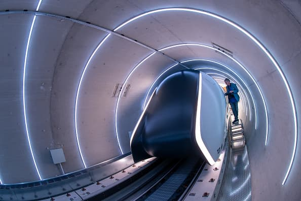

Иновативни технологии в бъдещето на железопътния транспорт

Автономни влакове
Автономните влакове вече са в тестова фаза и се очаква да се превърнат в стандарт. Те ще намалят човешките грешки и ще подобрят ефективността.

Hyperloop
Технологията Hyperloop предлага нов метод за високоскоростно придвижване, използващ вакуумни тръби и капсули, достигащи невероятни скорости.

Влакове с зелена енергия
Влаковете на бъдещето ще използват зелена енергия като слънчева и вятърна, за да намалят емисиите и да допринесат за устойчив транспорт.